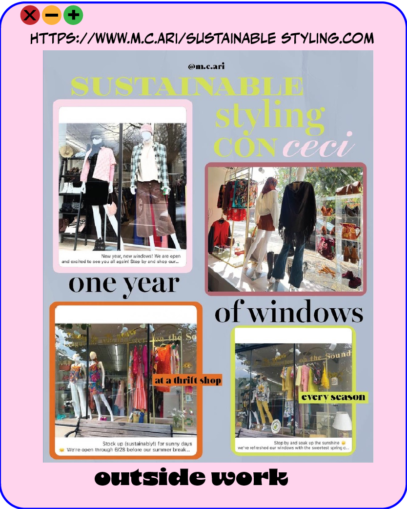

Introduction to Digital Design
LOGO
This was the first project of the semester, but we didn't start creating a logo right away. At first we were only given these instructions: First to come up with a common food, tool, or household object that starts with the first letter of your last name. The simpler and more iconic your selection the easier it will be. I picked an Apple. Next we had to think and create 30 iterations out of that one word. A week later we were given words randomly that we had to include in our logo, I got stormy. So now I had to create a logo for a "stormy apple." A couple of weeks later we were given another curveball when we picked books randomly and had to incorporate a piece of the book we selected into the logo. I had gotten inspiration from the books use of stripped yellow lines.
I have never created so many artboards on illustrator for one project! But I think this is the biggest take away. Starting of with thinking of iterations for one word and then creating over 30 iterations for our illustrations is what allowed for the last version of the logo to get there. I learned so many new technquies on Illustrator with this first project that it even helped me create a logo for my own photography account!
First Round of ideas:
I can see the growth with each illustration that went on and can see how my first ideas weren't logo ready. Here my ideas were very over the top illustrations.
Logo Progression:
I began taking only certain aspects of what was really needed to create a logo. I was very attached to some of my first illustrations but slowly started taking away.
Final Logo:
The last version was very muted but still had the original ideas, even got told the apple slices kinda look like eyes and I think that works too!

Advocacy Poster
We were allowed to pick whatever topic we wanted our poster to be about. I chose farmworkers rights since it is a topic I am very passionate about! Over the several weeks of working on the poster, our last version that we showed before it getting the OK to get printed had to show: our guidelines & grid, margins, must be in CMYK be 18x24 in dimensions and lastly be around 3 colors only.
I love this poster that I created in this class. It comes from a long line of wanting to advocate for the hard-working (& at many times) latino immigrants who get so little work rights in return. I had gotten inspiration from a streetart wall I had seen in San Fransico in 2017, and is why I used the words "La Tierra es De Quien La Trabaja" (the land is of those who work it) and I wanted to add "Apoya la Raza" (support your people, or help your roots/race) because I think it was a straight to the point way of saying support farmworkers.
I first started making drawing animation but quickly hated the way they looked so I decided to use real image of farmworkers. I downloaded a preset from retrosupply.co to create the halftone effect on the images of the farmworkers. I played a lot with the colors, and actaully printed a different version than the one you are seeing. But I went back after the semester was over and edited down how many colors I used and I like this final version a lot bettter. With everything going on this year in terms of protest and immigration rights, I ended up putting this poster on etsy earlier this year, in case people want to protest with it!
Outside Work
Hopefully by this point in my portfolio, you can see that I use the design skills I learned in this class for everything! I now know how to actually use Adobe Illustrator and it comes in handy in my school work and outside work. I wanted to include some examples:
Video Art:
So far in video art 1, I already used illustrator when creating this project. In order to make it look like a video game, I first created "graphics" that I later put into premiere pro.
Personal Logo:
I learned how to transform shapes on illustrator while taking this class and is the reason I was able to create this logo for my photography!
Work: 
I work at a thrift-store and get to make content about sustainable styling. I use illustrator to make grids and margins so they look good when they are posted on instagram.